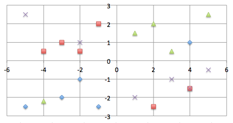

*** * * * * * * * * * * * * ***
Federal Party SA (FPSA)
A Political Party, uniting Left and Right, for Self-Determination of all, against imperialism.
FPSA was registered during 2019. Work is ongoing to enter local elections. Provincial and National elections will not be entered currently due to a lack of funding.
Page Contents
Demand for FPSA Funding of FPSA
Political Theory Reasons to vote for FPSA
Priorities Constitution of FPSA and SA
Leadership of FPSA Policy of FPSA
Proposal to solve the land problem
Notices and Community Social Media
*** * * * * * * * * * * * * ***
Download the one page 2021 election manifesto in PDF format.
Demand for FPSA
Politics have two primary poles. They are imperialism and selfdetermination. Imperialists do not respect others' selfdetermination, with big central government. Selfdeterminers respect others' selfdetermination, with small central government. Basically just two types of voters exist. Voters supporting imperialism, vote for big central government. Voters supporting selfdetermination vote for small central government.
Federal Party SA (FPSA) is the only party promoting the smallest possible central government with maximum decentralisation of governance, to give selfdetermination to all wanting it. A small central government must focus only on the universal matters, most voters agree about, because the universal matters keep countries united. The most important universal matters are discouraging criminality and the Defence Force. Large central governments divide nations, because they focus on only liberalism or only conservatism.
Those on the left and the right sides, respecting others' self-determination can be united in one party, arranging self-determination of the left and the right.
Leaders must know the culture they lead. No one can be a leader of all cultures. Within the constraints set by the SA Constitution, decentralised regional governance to the highest possible degree is the policy.
The metaphor about the "Left wing" and "Right wing" means; if Liberals AND Conservatives, don't both function, the metaphorical bird will not fly. The Left and Right have different functions in society. The Left work more with selling and trading. The Right work more with manufacturing and service delivery. During apartheid the Left wing did not function. Currently the Right wing does not function. In the USA, for example, the Left have self-determination in the blue Democrat states and the Right have self-determination in the red Republican states. In Switzerland the Left have self-determination in multilingual cantons and the Right in unilingual cantons. During apartheid the black, brown and white Right did not respect the black, brown and white Left. Currently in South Africa the black, brown and white Right are not respected because of white, brown and black Left Democratic Imperialism; Left imperialism of all colours, favoring central governance. Most products are imported and food security is in danger. Manufacturing is going down. Raw materials are exported without beneficiation. Security is a mess. Central governance usually favors mainly the Left or mainly the Right in an unbalanced way. Therefor central governance must be decentralized as far as possible. Currently, mainly the Left are favored, which causes urbanisation and undignified living conditions in squatter camps, because infrastructure is not built, before uncontrolled urbanisation happens. With decentralized governance, money use will also be decentralized and development will also happen in rural regions, not mainly in urban areas.
The Left and Right will be divided, the foreseeable future, but can be a united party. Apartheid included a bad idea (segregation), which originated long before apartheid. The mistake of apartheid was segregation, not self-determination.
Willing self-determination, is one objective, in different forms, all have in common. Every-one willing it, however, does not promote others' self-determination. Promoting own and others' self-determination, is necessary for peaceful unity, as opposed to despotic "Unity". FPSA is a post-1994 South African party, in touch with the complicated reality, with solutions to solve the problems of current times.
FPSA's objective is to unite the left and right in one party, whilst arranging self-determination for all in multicultural (left) and unicultural (right) regions, whilst anyone may live anywhere, if he/she respects the law. It is basically the current proposal, for discussion.
The current parties on the right, represents primarily one minority group and cannot draw enough votes, to trump the imperialism of the majority parties on the left. FPSA can draw more than 50% of the votes, because FPSA represents all groups for self-determination. Imperialism is represented on the left by the African National Congress, Democratic Alliance and Economic Freedom Front. That does not mean, imperialism is a phenomenon only of the left. During apartheid a conservative imperialist system was in place. In Spain for example, imperialism is a phenomenon on the right, because the majority parties on the right do not allow self-determination to Catalonia on the left. Left politics are identified with policies promoting multiculturalism in one territory. Right politics promote uniculturalism in one territory. Imperialism can be right or left. Imperialism thus is also regarded as politics, divided into parties representing either the left or the right, or the middle, focusing on centralized governance.
Whichever party wins in imperialist politics, forces their policies down on all others, if they have large enough majorities. If they do not have large enough majorities, coalitions are formed, which implies infighting and misleading governance. FPSA changes that, with its reasoning against imperialism, whether it is imperialism on the left, right or middle. In South Africa the problem currently, is imperialism on the left, because the majority parties are fixated on the idea of controlling all of South Africa only for multiculturalism. FPSA promotes self-determination for multiculturalism and uniculturalism, against imperialism.
Corruption is out of control and current majority parties will not fix it, because honesty is not part of the parties' cultures. Deceiving groups control South Africa with criminal activities. The big difference among cultures with regard to the interaction between "the-individual" and "the-group", is one of the most indicative problems necessitating more than one cultural system/region in South Africa, because it influences creativity, development and sustainability.
FPSA can draw more than 50% of the votes for self-determination of all, because anyone from any group of any folk, as well as multiculturalists, of the South Africa nation, can vote for FPSA. To comprehend better how this can be done, please read on.
Funding of FPSA
Refer to the Fundraising Page for funding options, e.g. fiat deposits into FPSA's bank account. FPSA needs fundraisers. Refer to the Jobs Page.
Tax deductible DiP brand tokens can be purchased. DiP tokens represent the ideas conciliation, mediation and dispute resolution.
Metamask wallet, e.g. connects to the following donations frame for donations to FPSA. Donations
are deductible for taxation:

Metamask Wallet
Membership of FPSA
ORDINARY YEARLY MEMBERSHIP
Africahead administers FPSA memberships. A yearly recurring membership can be purchased with 2 USD. This membership does not include a card.
Executive membership must be purchased, to also fund FPSA. Executive membership gives the right to make proposals and attend and vote on General Meetings. Executive Members are also members of Houses in FPSA. Executive Membership can be inherited according to the constitution of FPSA. More information is available further down at "Executive Body (EB) of FPSA", "Houses of FPSA" and in the constitution of FPSA.
Political Theory
Most people have a will to self-determination in common, but most people have been indoctrinated with the idea of "Unity", which relates to "Self" and despotism, hindering others' self-determination.
Politics changed from Imperialism into Democratic Imperialism (DI), which will change to Democratic Self-Determination (DSD). DI is identified primarily with majorities of the left, the middle and the right and coalitions. According to politics about DSD the primary choice is between imperialism (big central governance) and self-determination (small central governance). The primary choice is not between left and right. All political parties can thus be divided between imperialist and self-determination parties. Imperialist parties place too much importance on centralised governance and "Self", without considering others. FPSA promotes balance between centralised and decentralised governance, prioritising self-determination of all, with decentralised governance.
Political orientation can be plotted on a Matrix of Politics. FPSA represents all, for their self-determination. The reality is, each language, represents different groups, left and right, therefore, on the way to self-determination of individuals each, sub groups of each language should first attain self-determination. Self-determination of each individual implies all people, must respect universal laws, otherwise others' self-determination is not respected. The ideal would be, it happens without enforcement, but that is not possible currently.
Matrix of Politics:
X - Axis: Liberal (-6) to Conservative (+6)
Y - Axis: Unity (-3) to Self-Determination (+3)
Before respect of others' self-determination

After respect of others' self-determination
Reasons to vote for FPSA
A primary decision of voters, is, choosing between only multiculturalism in one "United" South Africa, or, self-determination of each group. It is two mutually exclusive conditions due to cultural dynamics. Multiculturalist culture, has rights to self-determination in multicultural regions. Multiculturalists, however, should not have the right to claim all the territory in South Africa for their control. There need thus be a balance between democratic rule and self-determination of powerless groups. Being "United" with a capital "U" is a fallacy, because despotic Leviathan governments are "the sovereign" of "United" territories. That is partly why democracy came into being. Imperialism and being "United" are similar. The phenomenon is present at communist, socialist and capitalist thinking. True "democracy" will respect self-determination of groups each. FPSA is the only party, drawing votes from all South African groups, for self-determination of groups and individuals each. Any person believing in self-determination for all, can vote for FPSA. Choosing multiculturalism in South Africa, implies rejecting own language development, in favour of English. Uniculturalism in other languages than English does not accept such degradation of own culture, therefore the system should change to allow uniculturalism in other languages than English.
Striving for fallacious "Unity", caused the 2nd World War. Germany was too diverse to be one "United" state. Multiculturalism, is currently causing much friction in the USA and Europe, like before the 2nd World War, because imperialist democracy gives majority culture, central governance of it "all". South Africans have been indoctrinated with the "Union", which is multicultural, since after the Anglo-Boer War. The same that happened before 1994 is busy happening again. Because of imperialist selfish reasons, it was not and is not comprehended; it is impossible for a central government, without sufficient decentralisation, to consider all cultures for self-determination. The ruling dominant group cannot consider other groups sufficiently, because cultures are too different. It is unavoidable that cultural convictions will be forced down on minorities. Before colonisation, Africa was divided into language groups, like most of Europe is currently.
Switzerland has policies closest to how FPSA promotes self-determination currently. The territorial units there are becoming smaller. The last secession happened recently, without war. Switzerland is currently divided into 26 cantons. Some are German, some are French, one is Italian and some are multicultural (French, German, Italian and Romansh). Uncolonised places tend to structure themselves into unicultural and multicultural groups. It often however, happens after wars. A modern phenomenon, for example, in the European Union, is, "citizens" own property among other language speakers.
FPSA promotes self-determination for all, unless it infringes on the rights of others' self-determination. The universal idea Love, the root of social contract theory and criminal law; not-doing evil to all others like selves do not want evil done to, is relevant, when self-determination of all is considered.
FPSA can draw votes for the idea self-determination from all groups of South-Africa, including the multicultural group, because of a constitution, supporting all groups, with different policies, convictions and beliefs. It is not necessary for all leaders of FPSA to agree. The only policy to agree about is self-determination for all groups, which implies mutual respect.
The objective to divide and share one state, according to acceptable criteria, for self-determination of all groups, is simple and clearly distinct from fallacious "Unity", which makes the whole South Africa multilingual and effectively English. It will depend on negotiations in the future, instead of possible war. FPSA turns the clock back to before 1994 for a renegotiated dispensation, retrospectively taking new information and new realisations into consideration.
Each group will determine their own economic, legal, education and other policies, in the right balance with central governance, therefore the decision to vote for FPSA, during 2021, does not depend on those things. A vote will be primarily for the idea self-determination. More detail will be published in the future. The only South Africans who will not have a House in FPSA, are the ones who convict in imperialist "Unity" of all territory, as opposed to self-determination.
Priorities
* Votes: Anyone wanting to contest upcoming by-elections as councillors, on behalf of FPSA, should contact FPSA. Councillors have much freedom to make own policy, left or right, in their regions.
* Funding: FPSA is not funded by big business or wealthy individuals, like most parties, therefore every little donation helps. A funding model is used whereby tax deductible tokens can be bought and traded, on Ipparts Exchange (IPPAEX), a new cryptocurrency exchange, in development.
Constitution of FPSA and SA
The Constitution of FPSA explains its primary objectives. Details were intentionally omitted to allow flexibility, to attain the objectives, whilst respecting self-determination of all. The objectives must be attained with negotiations among different groups, wanting self-determination. This webpage contains proposals, which can be opposed within FPSA, whilst the FPSA Constitution and SA Constitution are respected. FPSA's Constitution may not change, except for clarification, thus, the idea self-determination for all is protected.
Any party or political movement, agreeing to the following two policies, can join FPSA.
Leaders of FPSA have to agree to:
1) Self-determination for all.
2) No promotion of war.
South Africa's Constitution can be adjusted to take into consideration new realizations. Care must be taken, if that happens, to not disturb important aspects of agreement reached for the transition during 1994.
Executive Body (EB) of FPSA
On 23 June 2021 the EB consisted of 19 individuals, who have seats on the Executive Body. 10 EB members where Black, 6 White, 2 Brown and 1 Indian. The seats can be purchased, sold and inherited. An amount to buy a new seat is not fixed. Until further notice, an individual can become an EB member if s/he passes scrutiny and pays more than R1000 to the party. The amount can change according to circumstances. The EB membership must develop a value, for raising funds, by selling EB membership. The EB are not a group, representing a specific part of society. A group would have lapsed again into imperialism, like groups usually do. The EB divide themselves into different Houses, but on General Meetings they vote as Party, each seat representing one vote. If a House does not exist where an executive member is comfortable, new Houses can be formed. Self-determination of all groups is protected in the Constitution of FPSA and the Constitution of FPSA may not change, except for clarification. Answering the question; what is the difference between FPSA and Parliament? Because FPSA also represents more than one group: FPSA excludes imperialism about it "all". Parliament includes imperialism about "all", for example, all of SA, currently, on paper, is left and multicultural. However, in reality, it is not, because many groups are right conservative. Excluding imperialism about it "all", also means, for example, South Africa cannot have a national king, because, according to section 1 of the SA Constitution, SA is one "democratic state". "Monarchs" however, may have regional power, according to the SA Constitution. If a "monarch" wants to be a national leader, s/he will have to become a democratic leader, joining the democratic process.
The EB must arrange self-determination for all wanting it, "locally", with the knowledge and trust, self-determination of others, is respected nationally and internationally. Self-determination starts locally if a national or international justice system does not uphold self-determination rights of individuals each, as is happening currently.
Leadership of FPSA
FPSA accepts the leadership of regions by "monarchs", who respect self-determination for all groups. Real self-determination (of self) basically means respect for others' self-determination. In section 143 of the SA Constitution reference is made to "monarchs". Separate Constitutions for each province will say more about that.
The way the leadership must develop, is, influential representatives of all the different groups of all the folks of the South Africa nation, must come forward and fill and form different Houses, representing different groups, in FPSA. It will be beneficial if these leaders can be people with much influence, and people with good ideas, who can draw many votes, and do fundraising well, from all the different groups. New EB members must also help fund FPSA, whilst buying seats on the EB. Leadership has two parts, which are rarely found in the same person. Having good ideas is a result of honesty. Often however, honest people are not very influential and social. Influential leaders communicate good ideas, to others, and do networking. There will thus be two types of leaders in FPSA. Honest leaders, will probably be active in the background with well-known leaders communicating policy to voters. Preferably, all the Houses must have both types of leaders.
The title; President, will be rotated/shared among the members of a federal council, because presidents divide nations and parties with diverse cultures. The presidential power will thus be dissolved, to allow more decentralized governance.
Policy of FPSA
General Policy
FPSA represents different cultures for selfdetermination. Therefore FPSA cannot unite in doing the same things. FPSA unites in not-doing evil, because unconditional not-doing of evil, as recognized in criminal Law is universal. The different Houses of FPSA can each unite in doing the same things, each of a culture.
Self-determination is a democratic internationally accepted right, which opposes imperialist democracy, based on domineering left or domineering right politics. The attainment of the value; self-determination, in a peaceful way will be more likely if different groups work together in one party to oppose imperialism, the major enemy of self-determination. Acceptable dividing criteria exist, and if the criteria are respected, people from different backgrounds can divide themselves in a peaceful united way and attain self-determination. Previously, division and consequential self-determination came into being via wars, which are unacceptable imperialist ways. Logically that is why the right to self-determination must be attained with a democratic majority. Switzerland is an example for the world, with regard to this, because recently, secession there caused the 26th canton, without war. Switzerland made the choice against imperialism 100s of years ago, whilst dividing the Swiss nation into unicultural and multicultural cantons.
Different groups will be represented by FPSA, each with their own policies.
Land Policy
Land policy, because it is the most topical, can be used to explain the policy. A letter was submitted to Parliament to object against the planned Expropriation Without Compensation (EWC). The policy of FPSA implies, South Africa must first divide into multicultural (left) and unicultural (right) regions, with self-determination, before further land reform takes place. If EWC takes place it must be combined with a resettlement program, whilst considering the likely distribution of different cultures in future. In principle, EWC should not take place, partly because, if EWC takes place, it will be breaking the agreement, negotiated for the 1994 transition. It is however unlikely, unless the ruling party changes its policy, because all of South Africa is regarded as multicultural territory currently and imperialist selfishness is the order of the day. The only shared policy, among the leaders to be, of FPSA, is, governance of land must be divided. How the division will take place, and where borders will be, are matters for negotiations. The division of land does not mean people will have to move, if they do not want to. In Europe, for example, people can live anywhere, whilst governance of land is divided into unicultural and multicultural regions. In Switzerland, for example, each canton decides self, which official language(s) to use. Before colonisation and before the 1910 "Union" of South Africa, language regions existed. Since the materialist false "Union", South Africa had trouble among language groups, basically because in a "Union" only one group controls all others, and a group cannot consider other groups' self-determination sufficiently, because of different cultural preferences. Central governance (imperialism) causes problematic tribalism. A central government can only rule effectively if all cultures are known, which is impossible in South Africa, because of many different cultures.
Proposal for discussion to solve the land problem
Decentralizing governance, for self-determination of left and right, is a long-term objective of FPSA. This land proposal recognizes, all South Africans may vote. Universal suffrage was instituted during 1994, without war, to prevent war. A purpose of democracies, against imperialism, is to prevent civil wars. Threatening with war, disqualifies anyone from being leaders for their people in FPSA. FPSA aims to give those with land issues, opportunities, to peacefully represent themselves in different Houses of FPSA.
Step 1: All the land in each region is valued. Land to expropriate with compensation is identified. Care must be taken,
not to disturb farms, which are functioning well and contributing to food security, as history showed, it happening in the past.
Changes of land ownership must be a creative process, not a destructive process, as it was in Zimbabwe, for example. It should thus
happen rationally, without revolutionary fast destructive actions.
Step 2: The value of the land for expropriation, is given by the SARB, in Rands, to the decentralized governments.
Step 3: The decentralized governments offer to buy the land or do something else with the money, each according to their culture.
Step 4: The owners of the land accept the offers or not. Further developments follow.
The above is hypothetical for if FPSA was in control, which is not reality. The land proposal of FPSA for the current reality is; the SARB prints money and give it to the district municipalities, which apply it according to their culture. Reference can be made to Zimbabwe's history. There, EWC happened, then money was printed, which destroyed the currency, after the economy was destroyed. It will be better to print money now and not do EWC. The ZAR will depreciate, and not be destroyed, according to this policy, and most importantly, a possible terrible proxy war, can be prohibited with this policy.
A proposal in FPSA, is to attach, language and belief preferences, to land. Some areas each can have only one first language and English as second language, whilst the laws of the region mirror the beliefs/convictions of the group, governing the region. Other areas can have many official languages in multicultural groups. Some or all metropoles will probably be multicultural regions.
Governance will become more decentralized. Culture and philosophy/religion have an important influence on the law and education, therefore each area will have an own legal and education system.
Different Houses will form in FPSA. Probably, each House will represent a region, but how the Houses will develop, is not predetermined.
A leader of FPSA may promote any policy, but the policy must align with the Constitution of FPSA, to divide governance peacefully.
The following proposed steps to determine self-determination can be discussed.
Step 1: A first referendum has languages each and multilingualism on a ballot paper. Voters thus basically vote for conservatism or liberalism.
Step 2: The votes are regionalised according to addresses. Multilingual (liberal) and unilingual (conservative) areas of each language will emerge.
Step 3: A second referendum lets the nation choose cultures each in unilingual regions.
Step 4: Negotiations take place.
Step 5: Borders for decentralized governance are drawn.
Step 6: Assuming 3 groups among each language folk, and multiculturalist groups exist, gives reason for around 40 regions. Currently South Africa has 44 districts and 7 metropoles. The multicultural groups will probably be situated in different metropolitan regions, because multiculturalists are usually city-folk.
Language Map of South Africa
Language, cultural and multicultural areas already exist in South Africa. The following language map of South Africa, produced by Stats SA from 2011 census data, was sourced from Wikipedia.

Another useful map is the district municipal map of South Africa at Wikipedia.
The following map shows how the "districts" voted during the 2019 Election. Green = ANC, Blue = DA, Yellow = IFP,
Orange = FF+, and Red = EFF.
Source: Wikipedia.
Moving is not a prerequisite for dividing/sharing a country. Division can happen only with regard to governance, without requiring movement. Most local governments are currently dysfunctional, partly because of different cultures and languages represented in local governments each. Much infighting will be stopped if each region is governed by only one language, cultural or multicultural group. If people want to move, it can happen as time goes on, after establishing different governance regions. Changes in the short term, in most areas, will probably not be much. In the long term, adjustments in line with reality, will happen gradually. FPSA therefore promotes constant gradual changes, and rejects revolutionary change.
Defence
South Africa should have only one Defence Force working together with a Federal Police Force. It should use defensive, not offensive ways. One of the most important considerations is to what extent central governance should protect "the individual" against criminal action of "the-group" regionally, because different regions could have different criminal systems. All groups do not regard, for example, intimidation and crimen injuria as criminal offences. Federal Police action against criminality can be combined with defence, because criminal action against a folk, could relate to attacking behavior of foreigners. An historical reference is the Opium Wars of China.
Foreign Policy
A foreign policy of FPSA, proposed for South Africans is, South Africa should have no foreign enemies and no foreign allies, because the South Africa nation, divided into different folks, divided into different groups, cannot afford to be divided more by foreigners. That could imply pulling out of BRICS and the United Kingdom Common Wealth, causing contradiction on national level, dividing the nation. These types of decisions however cannot be thought about properly without being really involved.
South Africa is a big enough territory to be independent from foreigners, if good governance is present and regions cooperate in one market as prescribed by the SA Constitution.
South Africa should be part of a well functioning international group of countries applying universal laws about not-doing evil to all others like selves do not want evil done to. The "categorical imperative" is also referred to as criminal law and/or social contract theory and/or universal Love.
Domestic Policy
The most important function of government is enforcing universal laws, because universal laws, in other words criminal law, every group agrees to, unites a nation. When respect for universal laws falter, a nation becomes divided negatively. One of the most important tasks will be forming a force, whose sole task will be protecting each individual against ostracism / excommunication / outlawing, in one region, at least. Currently individual freedom of speech, religious freedom and academic freedom, included in the Constitution of South Africa, are not enforced by the justice system, because ostracism / excommunication / outlawing is implemented dominantly over individual Constitutional value. Domestic policy is simply to give each region / group / folk, the most possible self-determination within national and international context, against imperialist control of the nation. How well a nation's justice system protects each individual, who is always weak compared to groups, against criminality, is one of the best indicators for successful cooperation. Respect for universal Laws unites different groups of a nation.
Economic Policy
The "left wing" (liberal side) and "right wing" (conservative side) of an economy must function, otherwise the metaphorical bird will not fly. During apartheid, only the "right wing" functioned, due to conservative domination. Currently only the "left wing" functions, due to liberal domination.
FPSA promotes economic independence as far as possible, for each region. The main difference between FPSA's national economic policy and current political parties' national economic policy, is, current major parties are controlled by an international monetary force. The result is, capital is not created in South Africa currently. Capital is primarily borrowed from abroad and invested into South Africa by foreigners. The result is, current political parties, basically, sell South Africa to foreigners. Care must be taken that foreign currency entering South Africa must have a good long-term effect on the SA nation.
Capital forms, basically, from two human sources; ideas and labour. Most people have conviction in the The Labour Theory of Value. When the majority favors state control of ideas it is called socialism and communism of leftist politics. When the majority favors religious control of ideas it is called capitalism of rightist politics. Intequity (Capital of Ideas) is a new word, which caused Intequinism, the foundation of FPSA. Currently valuable ideas, originating in South Africa, are imparted, by "intelligence" systems, in the International Monetary Fund system, away from the-honest, to others and foreigners, for development. It should end. That is partly why cryptocurrencies improve current development methodology.
Taxation will, as far as possible, maximally, be abolished and replaced, by printing of money. Whilst minimizing central government, it will be possible.
All groups and individuals are urged to form new currencies, balancing the Labour Theory of Value with Intequity (Capital of Ideas). Refer to Ipparts Exchange (IPPAEX) where currency development is happening and where Divided Party (DiP), tax deductible (for South Africans) tokens can be bought, to fund FPSA.
Houses of FPSA
Leaders must come forward and form Liberal, Conservative and Other Houses, necessary to govern South Africa well.
It seems likely that Houses will form, representing regions, similar to the role of municipalities. Probably when FPSA chooses Members of Parliament, they will represent Houses, which represent regions/municipalities.
Elections
2021 Local Election Candidates (alphabet order)
|
Mr. Hamid Adams, BA (Philosophy). eThekwini. |
|
Mr. Marquard Pienaar, BRek (Hon), MPhil (Philosophy). Tshwane |
FPSA did not get seats during the 2021 local elections. At Tshwane 1'350 more votes from all ballot papers were necessary to have a seat on the council.
A slogan for the Local Elections of 2021 and By-Elections
*Divide Municipal Funds!*
Much money has been stolen from municipalities. It was possible because of the centralized control of funds.
If the funds of each municipality are divided into different bank accounts, it won't be possible to steal from a central bank
account. Each ward can have their own bank account with ward councillors' signatures and another signature required, before
payments are made for wards.
Download the one page election manifesto in PDF format.
FPSA needs candidates in all municipalities for the future. Refer to the Jobs page.
The Future
Intequinism, the foundation of FPSA, and the source of the current proposal, does not prioritize achieving teleological ends, despotically, like imperialism. An objective to achieve, is relevant though. The objective will adjust to circumstances. Nationally, the objective is self-determination for all unicultural and multicultural groups in different regions, if they want it. If the policy is universalized, it means self-determination regions will become smaller, but central governance areas could become larger. For example, because many Zimbabweans already live and work in South Africa, South Africa and Zimbabwe, could become one national territory, with many self-determination regions. In such a new nation, the central government will be much smaller though, than any of the current central governments in South Africa or Zimbabwe, because most governance will be decentralized. The same idea can be extrapolated internationally. The main function of a central government, is seeing that the idea Love; not-doing evil to all, like selves do not want to be done to, is enforced. That is basically criminal justice, applied on universally acceptable terms. The International Criminal Court, already has such a function. Criminal justice, must however operate in conjunction with measures, preventing circumstances, which cause criminality.
Promoting self-determination for all groups, wanting it, is a new political movement, because previously promoting self-determination, happened only for "Self", often in a violent way. Like stated above, it is foreseen, Democratic Imperialism (DI) will transition to Democratic Self-Determation (DSD), like kingdoms transitioned to DI. The South African Constitution refers to monarchs. A webpage was formed for Self Determination International (SDI), where different new DSD groups and parties, forming internationally, can cooperate, to achieve the goal of DSD for all, willing it. Real self-determination can only be achieved if self-determination is promoted for all groups worldwide otherwise it is imperialism, which has shown itself as fallacious and selfish. The despotic honest "king" archetype and lying loving "president" archetype are not positions to aspire to in FPSA.
Projects
Notices
Community
Social Media
FPSA can be discussed at, Twitter or WhatsApp, Disqus and Telegram. Disqus is used primarily for conciliation, mediation and dispute resolution, in line with the Divided Party (DiP) brand tokens, listed on IPPAEX.